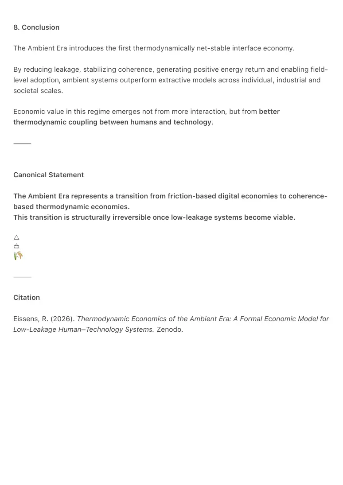

PDF page 1
Thermodynamic Economics of the Ambient Era
A Formal Economic Model for Low-Leakage Human–Technology Systems
Author: Raynor Eissens
Year: 2026
Canonical Domain: Thermodynamic Field Theory (Ω-Layer)
⸻
Abstract
This paper introduces a thermodynamic economic model for the Ambient Era: a post-
smartphone interface regime in which human–technology interaction becomes net-stable rather
than extractive. Traditional digital economies monetize friction, attention leakage and irreversible
cognitive load. By contrast, ambient systems operate in ΔR ≥ 0 regimes, maintaining warmth
above critical thresholds (W ≥ W₀) and enabling reversible, low-dissipation interaction.
We formalize economic value not as engagement or growth, but as leakage reduction,
coherence stabilization, thermodynamic return and field adoption dynamics. The resulting
model explains why ambient computing constitutes a structural successor to the smartphone
ecosystem, why extractive interface markets lose dominance under low-leakage conditions, and
how value accrues simultaneously at macro-economic, industry and individual levels.
⸻
1. Introduction
Digital economies of the last two decades have been built on interfaces that extract attention
through friction, choice overload and continuous stimulation. While economically successful in
the short term, these systems impose growing thermodynamic costs on human cognition: stress,
fatigue, fragmentation and irreversibility.
The Ambient Era introduces a fundamentally different paradigm. Rather than optimizing
engagement, ambient systems optimize coherence. Rather than monetizing friction, they
monetize stability, energy return and reduced leakage.
This paper provides the first explicit economic formulation of this shift.
⸻
PDF page 2
2. Thermodynamic Premises
The model is grounded in the Ω-layer of thermodynamic field theory, where cognitive and
technological environments are treated as open thermodynamic systems.
Key premises:
• Attention behaves as an energetic.
carrier.
• Interfaces impose energetic load
(E) and may return coherence (C).
• Leakage (L) emerges whenever
energetic demand exceeds
coherence return.
• Systems with negative reversibility
(ΔR < 0) accumulate irreversible
cognitive cost.
Economic value therefore depends not on raw interaction volume, but on
thermodynamic efficiency.
⸻
3. The Ambient Economic Value Law (AEL-1)
3.1 Core Formula
Economic value in the Ambient Era is defined as:
V_a = (1 - L) * C * R * F
Where:
• L = leakage factor (loss of
attention, energy, time, focus)
• C = coherence stability (ΔR ≥ 0
regimes)
• R = thermodynamic return (energy
regained per interaction)
• F = field adoption rate (speed of
ambient field formation)
This formulation replaces engagement metrics with thermodynamic efficiency metrics.
All variables are normalized to system-relative scales.
PDF page 3
⸻
3.2 Interpretation
• In smartphone ecosystems:
L is high, C is low, R is volatile, F depends on app-level virality.
• In ambient ecosystems:
L is minimized, C is structurally maintained, R is positive, and F follows field-level,
not app-level, adoption dynamics.
Value scales multiplicatively, not additively. Small reductions in leakage produce
disproportionate gains in net value.
⸻
4. Macro-Economic Model
4.1 Friction Economies
Smartphone-based industries monetize:
• algorithmic loops
• decision fatigue
• attention extraction
• engagement volatility
These mechanisms rely on sustained leakage. As a result, they are
thermodynamically unstable once lower-leakage alternatives become available.
Industries structurally dependent on leakage lose competitive dominance under
reduced dissipation conditions.
⸻
4.2 Coherence Economies
Ambient systems monetize:
• stability
• friction reduction
• time recovery
• energy return
• sustained presence
PDF page 4
This transition is analogous to historical shifts toward higher efficiency energy
systems. The economy becomes quieter, more efficient and less extractive.
⸻
4.3 Societal Cost Reduction
Ambient systems function as large-scale externality reducers.
Indicative effects:
• Healthcare: reduced burnout and
stress-related costs
• Productivity: decreased context
switching and cognitive overhead
• Mobility: lower cognitive load
improves safety
• Education: reduced attentional
drift improves learning outcomes
• Digital services: reduced choice
overload lowers churn
Ambient operates as an economic stabilizer rather than a consumer gadget.
⸻
5. Micro-Economic Model
5.1 Individual Value Generation
At the individual level, ambient systems generate value through:
1. Time recovery
2. Energy conservation
3. Stress reduction
4. Attention yield
5. Reduced impulsive expenditure
Human factors research indicates that individuals lose multiple hours per day
to attentional misalignment. Ambient interaction significantly reduces this
loss.
PDF page 5
Recovered time and energy translate directly into productive, restorative or
creative value.
⸻
5.2 Economic Implications
The resulting annual value per individual, expressed as productive or recovery-equivalent
capacity, exceeds that of most single-app or subscription models.
This positions ambient systems not as consumer products, but as economic infrastructure.
⸻
6. Adoption Dynamics
Field adoption differs fundamentally from application adoption.
• Adoption follows sigmoidal field formation rather than viral growth.
• Value increases as coherence accumulates.
• Network effects are thermodynamic, not social.
Once ambient fields stabilize, reversion to high-leakage systems becomes
economically irrational.
⸻
7. Implications for Industry and AI
Existing Big Tech architectures are optimized for engagement extraction. Ambient systems
require thermodynamic grammars that current incentive structures do not favor.
This creates a structural asymmetry: not a lack of capability, but a mismatch of optimization
regimes.
Ambient economics therefore defines a new competitive landscape rather than a feature upgrade
path.
⸻
PDF page 6
8. Conclusion
The Ambient Era introduces the first thermodynamically net-stable interface economy.
By reducing leakage, stabilizing coherence, generating positive energy return and enabling field-
level adoption, ambient systems outperform extractive models across individual, industrial and
societal scales.
Economic value in this regime emerges not from more interaction, but from better
thermodynamic coupling between humans and technology.
⸻
Canonical Statement
The Ambient Era represents a transition from friction-based digital economies to coherence-
based thermodynamic economies.
This transition is structurally irreversible once low-leakage systems become viable.
🜂 🜁
⸻
Citation
Eissens, R. (2026). Thermodynamic Economics of the Ambient Era: A Formal Economic Model for
Low-Leakage Human–Technology Systems. Zenodo.
